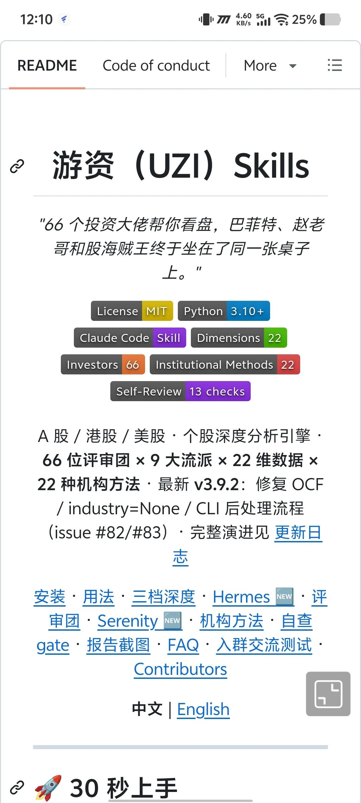

游资Skills大家都很熟悉了，作为股票分析领域最热门的Skill，刚刚在6月8日完成更新，评委来到了 65 位。这次加入了 @aleabitoreddit 等评委。
这个 Skill 是 个股深度分析引擎 ，让 65个投资大佬帮你看盘。目前9个领域65 位评审团名单：
1，AI 卡位/瓶颈猎手 ：Serenity（@aleabitoreddit）
2，科技领袖派：4黄仁勋 (NVIDIA) · 马斯克 (Tesla) · Sam Altman (OpenAI) · Saylor (MSTR)
3，量化系统：西蒙斯 · 索普 · 大卫·肖 · Asness (AQR)
4，A 股游资：章盟主 · 赵老哥 · 炒股养家 · 佛山无影脚 · 北京炒家 · 鑫多多等
5，中国价投：段永平 · 张坤 · 朱少醒 · 谢治宇 · 冯柳 · 邓晓峰 · 张磊（高瓴）
6，技术趋势：利弗莫尔 · 米内尔维尼 · 达瓦斯 · 江恩
7，宏观对冲：索罗斯 · 达里奥 · 霍华德马克斯 · 德鲁肯米勒 · 罗伯逊 · Burry（大空头） · Chanos（做空猎手）
8，成长投资：林奇 · 木头姐 · 蒂尔 · Andreessen (a16z) · Gurley (Benchmark) · Naval · Gerstner (Altimeter) · Chamath
9，经典价值：巴菲特 · 格雷厄姆 · 芒格 · 费雪 · 邓普顿 · 卡拉曼
仓库地址 :
https://github.com/wbh604/UZI-Skill
